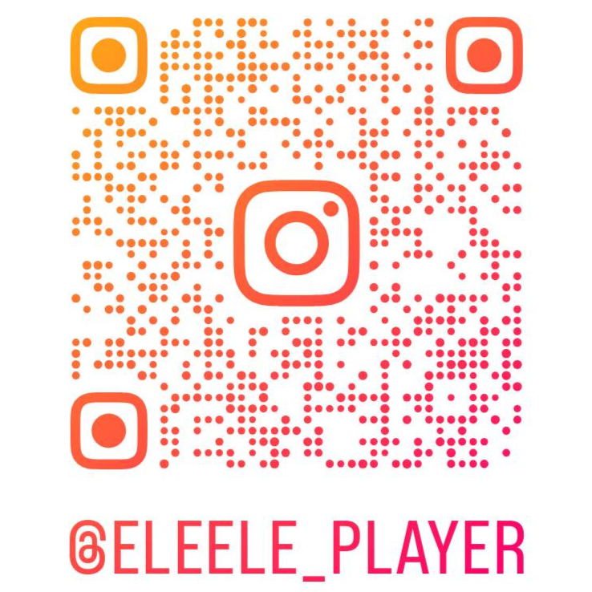

痛點與解方
為什麼成人學琴總是半途而廢？
成人學琴的目的多半是為了「表達內心」，而非應付考試與正式表演。傳統背五線譜與機械式練手勢的教學方式，容易耗盡初學者的熱情與精力。
成年人白天忙碌工作，需要極度自律才能練習，但下班後通常沒有充裕精力去做這種與放鬆休息相反的事。
無壓沉浸 × 放鬆遊玩中掌握底層邏輯
打造像玩遊戲般的沉浸式體驗。在視覺與聽覺的放鬆遊玩中，逐步累積並掌握鋼琴與樂理的底層邏輯。
最終達成「無須死記硬背樂譜、隨心所欲即興彈琴」的非凡成就，讓音樂真正成為心靈的放鬆出口。
產品展示
3D 多視角演奏場景
採用 Unity 渲染多種場景。支援自由切換演奏者視角，並具備高度客製化的配色系統，打造個人專屬數位空間。
音樂瀑布流與動態變色琴鍵
揮別五線譜的負擔！直覺式瀑布流，琴鍵隨演奏動態變色，並結合即時唱名音階標籤（Do Re Mi），讓初學者用肌肉與色彩記憶直覺彈奏。
多種音色與實體 MIDI 鍵盤接入
內建多種高品質音色。支援曲目循環播放，左右手聲道單獨開關，連接實體 MIDI 鍵盤達成最逼真的手感反饋。
技術架構
Flutter
前端介面 (UI/UX)跨平台聲響與視覺控制面板，流暢的響應式選單，即時介面狀態回饋。
Unity Engine
3D 視覺渲染光影渲染引擎，專注於沉浸式演奏空間、琴鍵物理響應、音樂瀑布流的高幀率畫面。
C++ Core
底層核心 (MIDI 處理)追求極致的硬體 MIDI 事件監聽，確保實體按鍵與音效觸發無體感延遲。
AI 協作工作流
概念共創、技術規章、認知對齊、嚴格驗收、版本控制
雛形發想與作品企劃
與 Gemini 深入討論，將成人「以音樂表達內心、抗拒傳統枯燥練琴」的痛點，轉化為「像玩遊戲般享受即興」的願景，寫下具體的作品企劃書。
作業流程書
根據企劃書進一步與 AI 討論工程拆解，將整個製作過程劃分成多個明確的階段性任務，產出對標傳統甘特圖的「作業流程書」。
流程企劃書
根據作業流程書，規劃每一階段的具體技術實現方式與「目標達成判定規則」，將願景升級為具備具體製作步驟與判定標準的深化企劃。
制定產品規格書
探討實現細節，產出包含階段需求、系統整體大架構、模組小架構、程式碼規範與資料流 I/O 定義的產品規格書，確立開發規則。
認知同步與消弭歧義
匯入 Antigravity，要求 AI 逐項閱讀並「口頭回覆理解內容與行動規劃」；依據討論反向修正所有文檔，達成雙方認知百分之百對齊。
MCP 工具與環境就緒
配置 MCP 工具權限並與 AI 確認可操作能力，建構乾淨完備的開發環境，授權 AI 依據規格書與流程企劃書開始實作。
Vibe Coding、嚴格驗收與 Git 絕對掌控
AI 寫 Code，我賦予靈魂
- ▸ 高效率處理大量程式碼生成與底層串接細節。
- ▸ 依據規格書精準實作模組與 I/O 轉換。
- ▸ 每次修改主動提供人類便於測試的驗收方式。
- ✦ 評估系統架構的可擴充性與長遠相容度。
- ✦ 搜尋 3D 視覺風格參考，探索並調優 3D 建模的最佳 Prompt。
- ✦ 構思 UI 排版與真實演奏手感的使用者體驗。
- ✦ 親自驗收每一項功能，以 Git Graph 嚴格把關開發掌控度。
下一步規劃
核心教學系統開發
打造專為成人設計的「新手教學」與「音樂能力成長系統」。
封測招募與正式上線
啟動桌面版封測招募，彙整核心用戶反饋進行優化後正式上架。
跨平台行動版擴展
在累積首批真實用戶與社群基礎後，投入手機與平板 APP 開發。
FOLLOW ME & THANKS
邀請在座各位追蹤我的社群帳號！未來準備就緒時，誠摯邀請大家搶先體驗 Piano Player 封測。
